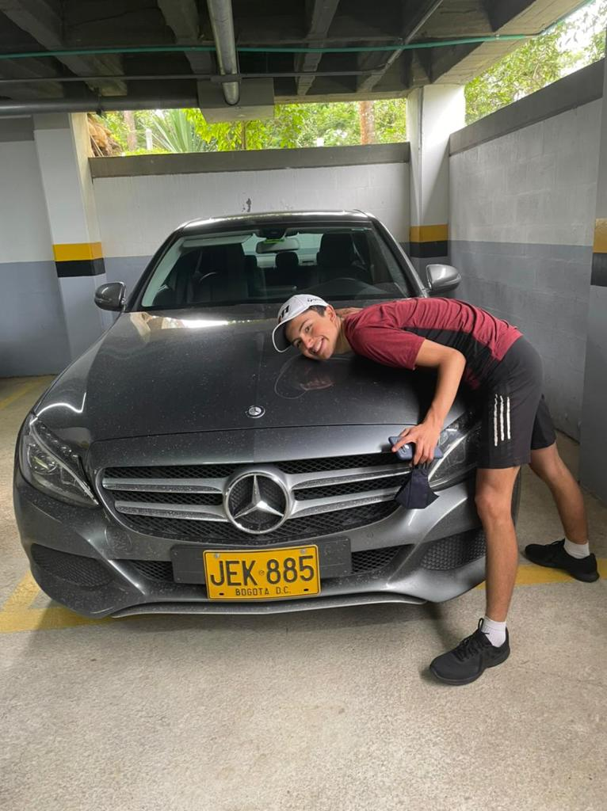
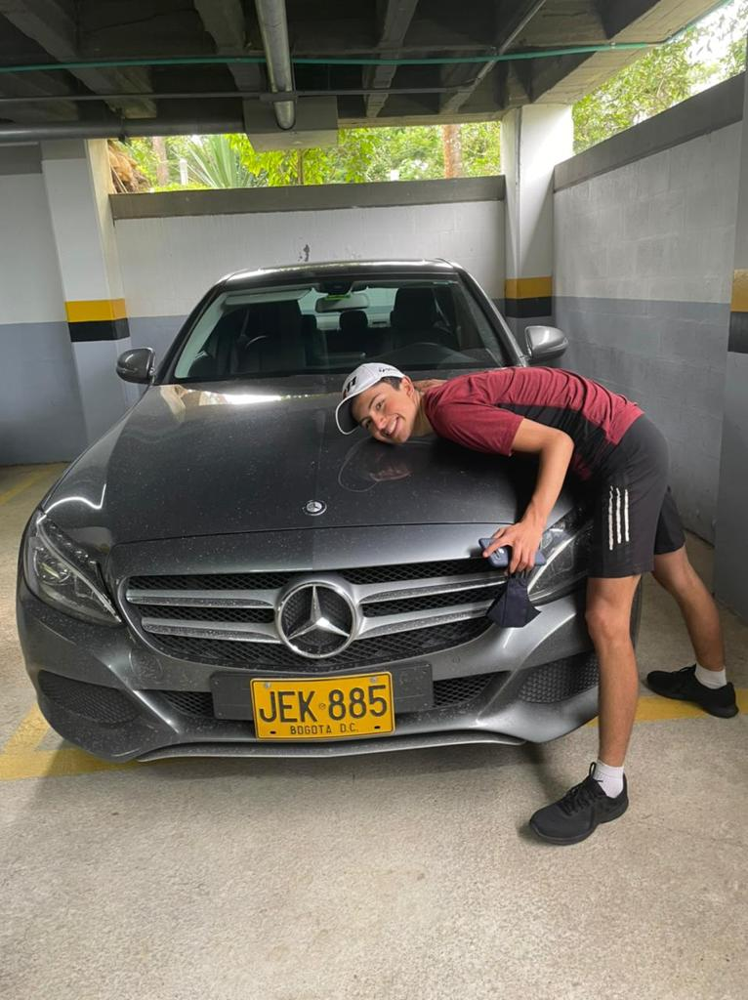
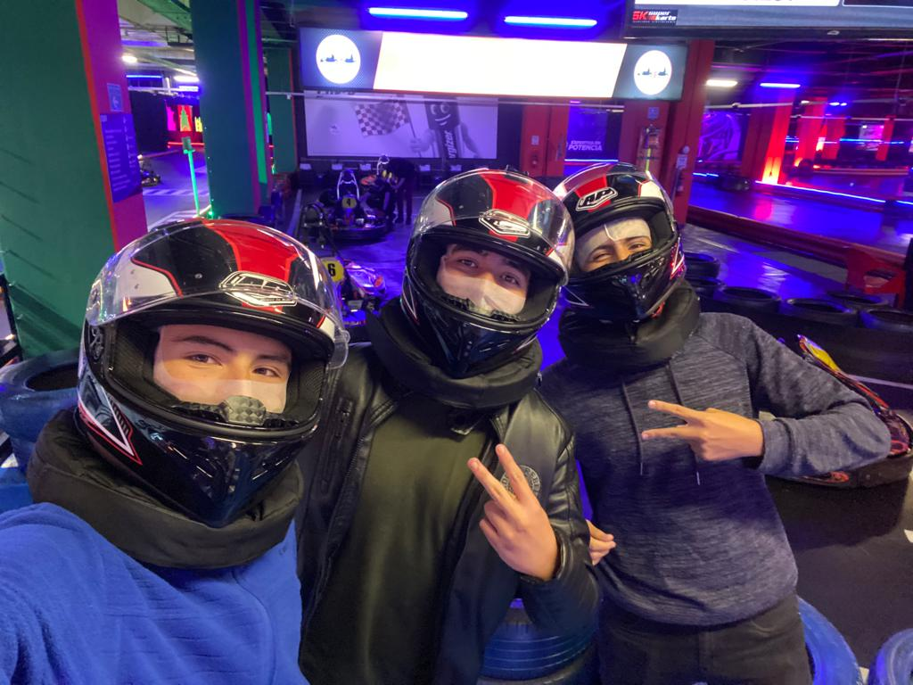
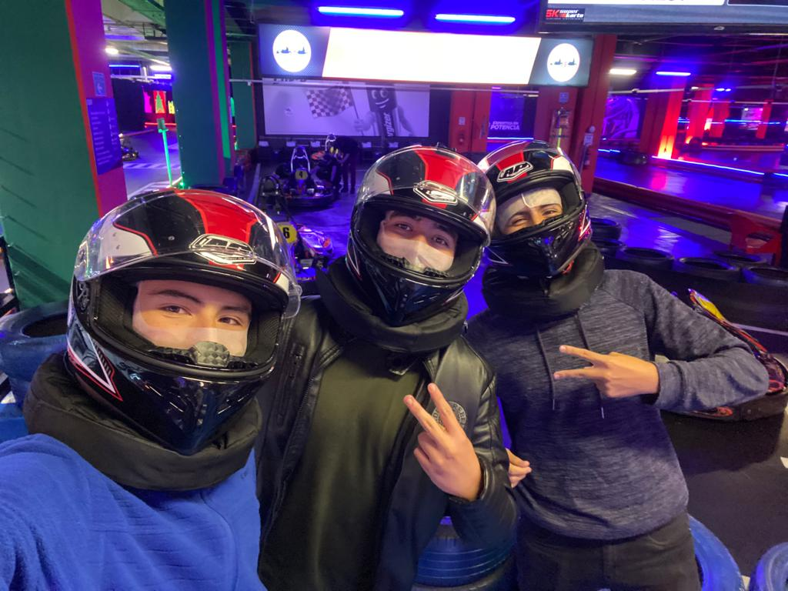

El Blog de Esteban
¡Bienvenido a mi blog personal, Soy Esteban y en este espacio vas a descubir informacion sobre mi. Mis experiencias pasadas y mis sueños y metas para el fururo.
Quien soy?
 

Mi nombre completo es Esteban Bernal Cortes, soy un estudiante de tercer semestre de la universidad de la sabana, perteneciente a la carrera de ingenieria informatica, tengo 18 años y me interesan bastante todos los temas relacionados con teconologia, por eso decidi dedicarme a ellos.
Ademas de mi pasion por estos temas, soy un apasionado por los carros y la formula 1, es la pasion mas grande que he tenido en mi vida y son una parte muy importante de mi, Tambien soy una persona atletica, me gustan mucho los deportes, principalmente jugar tenis, practicar ciclismo y golf.
Tambien tengo una hermosa familia, mis papas y una hermana, vivimos todos juntos en un apartamento en Bogota. Mi novia es la persona mas imporatnte que tengo y es un pilar indispensable en mi vida. Por ultimo mis amigos, siento que soy afortunado de tener personas buenas a mi alrededor que valoro un monton y con las que comparto mucho todos los dias.
Mi vida resumida
Naci un 27 de abril del año 2004, en la fundacion Santafe de Bogota, mis primeros años fueron muy tranquilos y felices ya que mis papas siempre habian deseado tener un hijo, siempre fui un niño muy amado y muy querido por mi familia, pase mucho tiempo con mi abuela materna ya que ella era muy muy cercana a mi familia por lo cual es una persona muy especial para mi, mis abuelos paternos tambien fueron muy importantes en mis promeros años, a la edad de 4 o 5 años aproximadamente entre a estudiar al Jardin.
En el año 2011 entre a primaria, por primera vez en el colegio, yo fui muy feliz porque mis papas eligieron un excelente colegio campestre para que yo estudiara, y lo unico que me importaba en esa epoca era tener un colegio gran y bonito, que hasta granja propia tenia!. Siempre me destaque por ser un excelente estudiante tanto academicamente como convivencialmente, estaba siempre en los mejores promedios de mi grado y tambien participaba en actividades extracurriculares en el colegio. Siempre me gustaron los videojuegos y con mis amigos de ese tiempo era muy adicto a ello.
En secundaria mantuve mi estereotipo de estudiante ejemplar y acadamicamente correcto, desafortunadamente ya para el grado 9no cambie radicalmente y consegui nuevas amistades, por lo que me volvi una persona mas problematica y empece a perder materias y a tener problemas convivenciales, afortunadamente supe controlar esta situacion, aun asi manteniendo mis nuevas y actuales amistades y llegaria pandemia, donde conseguria a mi actual novia y multiples mas cosas pasaron para que pudiera terminar el colegio de una forma mas calmada y no tan problematica. Cerre muy feliz mi grado 11 con mis amigos de la vida y tenia muchas espectativas para el futuro.


Cuando sali del colegio tenia muchas dudas acerca de que queria estudiar, sabia que una ingenieria porque me gusta bastante el concepto de lo que es ser ingeniero y resolver problemas siempre ha sido un reto y algo atractivo para mi, mis ppas siempre me dijeron que podia estudiar lo que qusiera, donde quisiera, por lo cual no tuve presion alguna a la hora de elegir universidad y carrera, para ser honesto desde que vine a la Sabana me enamore por completo de la universidad y actualmente sigo muy contento con la carrera y la universidad ya que al venir de un colegio campestre no queria perder esa costumbre de estar en un lugar agradable. Me regalaron tambien un carro para movilizarme, y aunque no sea un deportivo mi amor por los carros me hizo muy feliz al entrar a la universidad.
Actualmente voy en tercer semestre, y aunque la carrera no sea naada facil, estoy muy feliz con mi vida actual y con la universidad, al comienzo tenia dudas pero forje unas amistades tan buenas que me hicieron enamorarme mas aun de la universidad, tambien me ayuda mucho el echo de que mi novia estudia en La Sabana tambien, y vive en un condominio cerca a la universidad por lo cual compartimos mucho tiempo juntos y cada dia somos mas unidos y mas felices, por lo que mi relacion ha crecido tambien en esta nueva etapa. Tambien con mi nuevos amigos decidimos entrar al negocio del Trading y las inversiones, y aunque sea algo bastante complicado hemos estado aprendeindo muchisimo y ultimamente tenemos muy buenos resultados que de cara al futuro esperamos ser rentables.
Mi Futuro y Metas
Para el futuro quiero muchas cosas, como prioridad principal lo son mi estudio y mi trabajo, quiero graduarme satisfactoriamente de la carrera de ingenieria informatica y ser un trader rentable y autosostenible lo cual ya me genere muy buenas fuentes de ingreso. Quiero seguir y mantener la relacion con mi novia y antes incluso de graduarme poder mudarnos a un lugar juntos con el dinero de nuestro trabajo y inversiones. Cuando me gradue quiero especializarme en el campo del desarrollo y arquitectura de aplicaciones, justo como mi papa, y trabajar en el area de seguridad informatica, la cual es la que mas me atrae en este campo.
Mi idea para generar un impacto positivo en mi vida y en la de las demas personas, y aunque sea muy pronto aun es vivir del trading y de mi carrera profesional. Crear una empresa la cual se dedique al desarrollo de aplicaciones para traders, como brokers, herramientas de trading, y bots para operar el mercado, y software y sistemas de seguridad para empresas, asesorias para empresas y demas temas relacionados con esta. Se que no va a ser facil y que muchas cosas pueden suceder en el camino.
En cuanto a mi foramcion academica tengo un grado digital en Trading y Analisis de mercado, por lo cual por ese lado siento que al ser un negocio propio e individual, los conocimientos los ampliare con experiencia y trabajando con los años, por el lado de la ingieniria, si quiero tener magisters y especializaciones, en las areas ya mencionadas, ya que al ser una carrera con una cobertura tan amplia de campos del conocimiento, se puede trabajar en muchas cosas.
 
